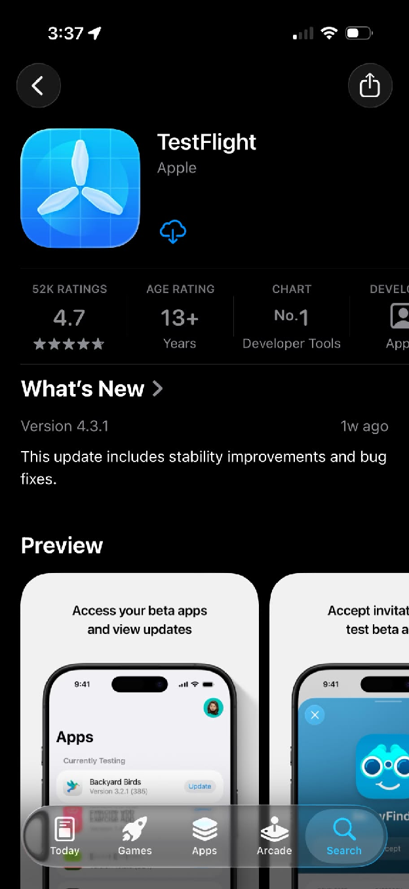

TRỞ THÀNH TESTER
Cùng Lyrion.
Tốt hơn mỗi ngày.
Trải nghiệm những tính năng đầu tiên, chia sẻ điều bạn nghĩ và cùng chúng mình hoàn thiện LyrionFitness.
Lời mời TestFlight chưa mở. Đăng ký sớm để nhận tin từ Lyrion.
TRƯỚC KHI BẮT ĐẦU
Chuẩn bị một chút.
Trải nghiệm dễ dàng hơn.
- iPhone có kết nối internet. TestFlight hiện cần iOS 16 trở lên. Bản thử nghiệm Lyrion có thể yêu cầu phiên bản iOS cao hơn; hãy xem yêu cầu trong lời mời.
- Apple Account để tải TestFlight từ App Store. Dùng tài khoản của bạn trên chiếc iPhone sẽ tham gia thử nghiệm.
- Lời mời qua email hoặc liên kết công khai. Bạn không cần tài khoản nhà phát triển hay quyền truy cập App Store Connect để tham gia từ liên kết công khai.
Tester bên ngoài được mời qua email hoặc liên kết công khai. Tester nội bộ là thành viên nhóm có quyền truy cập ứng dụng trong App Store Connect; người tham gia qua liên kết công khai không cần quyền này.
Yêu cầu thiết bị: TestFlight trên App Store. Tài khoản: hướng dẫn Apple.
-
Cài đặt TestFlight
Mở App Store và tìm TestFlight của Apple. Chạm Nhận (Get) hoặc biểu tượng đám mây nếu bạn đã từng tải ứng dụng.
Cài xong, mở TestFlight và làm theo hướng dẫn trên màn hình.
Mở TestFlight trên App Store
-
Chấp nhận lời mời
Kiểm tra tên ứng dụng là LyrionFitness. Nếu màn hình yêu cầu mã mà bạn không có, hãy mở lại liên kết mời trên iPhone.
Đăng ký sớmLời mời TestFlight chưa mở. Bạn có thể đăng ký sớm để nhận tin từ Lyrion.
-
Cài đặt LyrionFitness
Trong TestFlight, tìm LyrionFitness và chạm Install (Cài đặt). Khi tải xong, nút sẽ đổi thành Open (Mở).
Chạm Open để bắt đầu. Ứng dụng cũng sẽ xuất hiện trên iPhone để bạn mở lại khi cần.
Nếu bạn đã tham gia trước đó, TestFlight có thể hiển thị Open hoặc Update thay cho Install.
-
Cập nhật ứng dụng
Mở TestFlight và tìm LyrionFitness. Khi có bản mới, chạm Update (Cập nhật), rồi Open để sử dụng.
Để tự động cập nhật, mở trang LyrionFitness trong TestFlight, tìm mục App Information và bật Automatic Updates.
Mỗi bản build dùng thử tối đa 90 ngày. Nếu bản đang dùng hết hạn, hãy cập nhật sang bản mới khi nhóm Lyrion phát hành.
-
Gửi phản hồi của bạn
Một thao tác chưa rõ, một lỗi vừa gặp hay một điều bạn thích đều giúp Lyrion tốt hơn. Đây là nơi bạn có thể kể lại trải nghiệm của mình.
Mở nơi gửi phản hồi
Mở TestFlight, chọn LyrionFitness, rồi chạm Send Beta Feedback. Chọn Include Screenshot nếu muốn gửi ảnh; nếu không, chọn Don’t Include Screenshot.
Viết nội dung rồi gửi
Nếu có ảnh, chọn ảnh trước khi viết. Nhập thao tác bạn đã làm, điều xảy ra và điều bạn mong đợi. Kiểm tra nội dung rồi chạm Submit (Gửi).
Nếu ứng dụng bị văng
Nếu TestFlight hiện thông báo sau sự cố, chạm Share, thêm mô tả rồi chọn Submit. Báo cáo crash cũng được TestFlight tự động chia sẻ với nhà phát triển. Phản hồi bạn viết giúp nhóm hiểu thao tác đã dẫn đến lỗi.
Bạn có thể chụp và lưu ảnh màn hình ngay khi gặp vấn đề. Sau đó, mở lại nơi gửi phản hồi trong TestFlight và chọn Include Screenshot để đính kèm ảnh như hướng dẫn ở trên.

KHI CẦN TRỢ GIÚP
Chưa vào được?
Thử những cách này.
Lời mời không hoạt động
Cài TestFlight trước, rồi mở lại email hoặc liên kết trên iPhone. Nếu vẫn lỗi, gửi nội dung thông báo cho nhóm Lyrion để kiểm tra lời mời.
Chương trình beta đã đủ người
Bạn chưa thể tham gia qua liên kết đó. Đăng ký sớm và chờ nhóm Lyrion mở thêm chỗ hoặc một đợt thử nghiệm mới.
Bản build đã hết hạn
Mở TestFlight để tìm bản cập nhật. Nếu chưa có bản mới, bạn cần chờ nhóm Lyrion phát hành; cài lại bản hết hạn không kéo dài thời gian dùng thử.
Ứng dụng không còn khả dụng
Đợt thử nghiệm có thể đã kết thúc hoặc hiện chưa có bản phù hợp. Liên hệ nhóm Lyrion để biết khi nào bạn có thể thử tiếp.
Không cài được ứng dụng
Kiểm tra mạng, dung lượng trống và yêu cầu iOS hoặc thiết bị trong TestFlight. Cập nhật TestFlight, thử lại và gửi ảnh thông báo lỗi cho nhóm Lyrion nếu vẫn gặp vấn đề.
HẸN BẠN TRONG LYRION
Bắt đầu từ một góp ý.
Cùng tạo nên điều tốt hơn.
Lời mời TestFlight chưa mở. Đăng ký sớm để nhận tin từ Lyrion.
Đăng ký sớm Hướng dẫn TestFlight chính thức của Apple